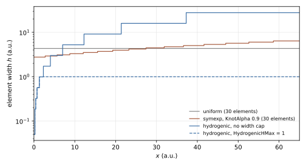
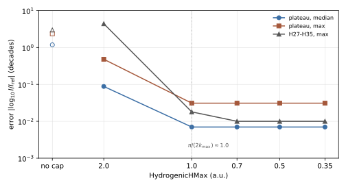

Knot Sequences
The knot sequence of an axis fixes the element boundaries of the B-spline basis (Grid & Domain) and therefore where the grid is fine and where it is coarse. TDSE-Z provides uniform, graded, interface-aligned and hydrogenic sequences. This page defines them, describes the field-resolution check that applies to every sequence, and reports convergence studies for Coulomb potentials and high-harmonic generation (HHG).
Selection
KnotSequence takes one name for all axes or a comma-separated list, one
name per axis (case-insensitive):
KnotSequence = symexp # every axis
KnotSequence = hydrogenic, uniform # x hydrogenic, y uniform, z uniform (default)
KnotSequence = symexp, uniform, symtanu
A single name applies to every axis; with two names the z axis keeps the
default uniform. Valid names are uniform, symexp, symtanu,
symtann, symlogtan, hydrogenic and interface (alias
interfaces); any other name stops the run during input validation. The
knot vectors are generated on rank 0 and broadcast; the environment variable
TDSEZ_DUMP_KNOTS prints the interior knots of a non-uniform x axis.
Sequence |
Knot placement |
Tuning keys |
|---|---|---|
|
Equal elements on \([L_{\min}, L_{\max}]\). |
– |
|
Exponential map Eq. (11): dense at the origin, coarse at the walls. |
|
|
Inverse-tanh map Eq. (12): dense at the centre of the box, coarse at the walls. |
|
|
tanh map Eq. (13): dense at the walls, coarse at the centre of the box. |
|
|
Tangent map Eq. (14): mildly dense at the origin. |
|
|
Linear near the origin, exponential outside, optionally capped (Eq. (15) to Eq. (17)). |
|
|
Uniform within each material layer, \(C^0\) knots at the layer boundaries. |
Breakpoints of |
KnotAlpha (aliases KnotGrading, GradingStrength) applies to all
graded axes; a value \(\le 0\) selects the defaults listed above. The
hydrogenic keys are per-axis lists (Input File).
Graded sequences
symexp, symtanu, symtann and symlogtan place
\(n = N_{\mathrm{el}} - 1\) interior knots (Nelements - 1) at the
images of the uniform parameters
under a map of \((-1, 1)\) onto the axis, with \(\alpha\) =
KnotAlpha:
symexp grades towards \(x = 0\) and scales each side to its own wall,
so it also serves boxes that are asymmetric about the origin. symtanu and
symtann are symmetric about the box centre. symlogtan uses
\(L_{\max}\) for both sides and assumes \(L_{\min} = -L_{\max}\).
A knot lies at \(t = 0\) (the origin, or the box centre) only when
\(n\) is odd, i.e. when Nelements is even; otherwise a warning is
printed. A Coulomb centre should sit on a knot (see the quadrature study under Coulomb potential: 3D hydrogen).
Hydrogenic sequence
The hydrogenic sequence is built on the half axis \([0, L]\) with
\(L = L_{\max}\) and mirrored about the origin; the axis is
\([-L_{\max}, L_{\max}]\) and LMin is not used. With
\(N_{\mathrm{lin}}\) = HydrogenicNLin (0 selects Nelements - 1),
\(R_1\) = HydrogenicR1 (0 selects 0.1 a.u.) and
\(N_{\exp}\) = HydrogenicNExp (0 selects 10), the half-axis knots are
followed by the exponentially graded knots
so that each half axis carries \(N_{\mathrm{lin}}\) linear and
\(N_{\exp}\) exponential elements and the axis has
\(2(N_{\mathrm{lin}} + N_{\exp})\) elements; Nelements only enters
through the default of HydrogenicNLin. \(r_{\mathrm{c}} < L\) is
required; otherwise the run stops with a message. The outermost element has
the width \(L\,[1 - (r_{\mathrm{c}}/L)^{1/N_{\exp}}]\).
HydrogenicHMax (alias HydrogenicMaxSpacing) caps the element width at
\(h_{\max}\): from the first element \([r_j, r_{j+1}]\) wider than
\(h_{\max}\), the rest of the half axis is replaced by
uniform elements. A positive value sets \(h_{\max}\); a negative value
disables the cap; 0 (default) derives \(h_{\max} = \pi/(2k_{\max})\) from
the field (Eq. (19)) when EnablePropagation = 1 and the
field is non-zero, and applies no cap otherwise. The start-up line
TDSEZHydrogenicKnots reports the element count, \(R_1\), the largest
width (marked “capped” when the cap is active) and \(r_{\mathrm{c}}\).
Fig. 2 compares the element widths of the sequences on the x axis of the HHG study below.


Fig. 2 Element width against position on the half axis \([0, 65]\) a.u.:
uniform and symexp (KnotAlpha 0.9) with 30 elements, and
hydrogenic (\(R_1 = 0.05\), \(N_{\mathrm{lin}} = 5\),
\(N_{\exp} = 10\)) without width cap and with
HydrogenicHMax = 1. Computed with the generator formulas of
src/core_knots.cpp (script figures/make_Knot-Sequences-elements.py).
Interface-aligned sequence
interface places knots at the material interfaces of heterostructures
described by piecewise expressions. The breakpoints are read from comparisons
of the form x < c, x <= c, x > c, x >= c (breakpoint
\(c\)) and abs(x) < c or fabs(x) < c (breakpoints \(\pm c\))
in Potential and Mass, with \(c\) a numeric literal; comparisons on
other operands are ignored. Breakpoints are taken from comparisons on x
only, and the same positions are used on every axis that selects
interface.
The Nelements elements are distributed over the layers between the
breakpoints in proportion to the layer width (at least one per layer) and are
uniform within each layer. Every interior breakpoint is a knot of multiplicity
\(p\), so the basis is \(C^0\) there and can represent the kink of the
BenDaniel-Duke wave function at an abrupt interface [BenDanielDuke1966]
(continuous \(\psi\) and \(m^{-1}\psi'\), discontinuous
\(\psi'\)). Each interface adds \(p - 1\) basis functions. Without
breakpoints the sequence is uniform and a message is printed.
Field-resolution check
When EnablePropagation = 1 and the field is non-zero, TDSE-Z estimates
the field scales once from the input and compares them with the mesh of every
axis, for every knot sequence:
\(E_0\): the largest \(|E_a(t)|\) over the polarised axes, sampled at 20 001 points on \([0, T]\), \(T\) =
FinalTime;\(\omega\): the largest
Omegax/y/zof the polarised axes; if all are zero, it is estimated from the zero crossings of the dominant field component (at least three crossings required);\(I_p\): \(-\)
TargetEigenvalueif negative, otherwise 0.5.
The highest return momentum follows from the classical cutoff law [Krause1992] [Corkum1993],
and the required element width is about four elements per de Broglie wavelength of the fastest returning electron,
This applies to the axes coupled to the field (Polarization). Across the
field the electron moves with the much smaller transverse momentum spread,
and the element width may be larger by TransverseElementFactor
(\(f\), default 2, at least 1),
measured in High-harmonic generation. The start-up output prints
\(E_0\), \(\omega\), \(U_p\), \(I_p\), \(k_{\max}\) and
both widths, and for each axis (marked polarised or transverse) either the
widest element (“resolved”) or a warning with the axis, the widest element and
its position. The grid is not modified; only hydrogenic with
HydrogenicHMax = 0 uses these widths as its per-axis caps. \(E_0\) and the
zero-crossing estimate of \(\omega\) are taken from
\([0, \mathrm{FinalTime}]\): a test run with a shortened FinalTime
sees only the beginning of the pulse and may obtain a different width. The
zero-crossing estimate is accurate to a few per cent for short ramped pulses;
the criterion Eq. (19) has a margin of about a factor of
two (see High-harmonic generation).
Convergence studies
The following results were measured with TDSE-Z and serve as guidance for choosing grids.
Coulomb potential: 3D hydrogen
Setup: \(V = -1/r\), degree 3, 8 Gauss points, hydrogenic with
\(R_1 = 0.05\), \(N_{\mathrm{lin}} = 5\), \(N_{\exp} = 10\)
(35 937 DOFs on \(\pm 10\)); exact ground-state energy \(-0.5\).
Box size and boundary condition. The box size dominates the error. With Neumann boundaries (Boundary Conditions) the wave function is not forced to zero at the wall, and the ground-state energy falls below the exact value when the box truncates the tail of the state, because the truncated tail carries positive local energy. Beyond 5 a.u. the 1s state holds 0.3 % of the probability.
Box (a.u.) |
Neumann (default) |
Dirichlet |
|---|---|---|
\(\pm 5\) |
-0.501454 |
-0.498718 |
\(\pm 10\) |
-0.4999968 |
-0.4999966 |
\(\pm 15\) |
-0.4999935 |
-0.4999935 |
Recommended box half widths are 10 a.u. for the ground state, 20 a.u. for \(n = 2\) (on \(\pm 10\) the \(n = 2\) energies are 3–6·10-3 too low) and about 35 a.u. for \(n = 3\). On \(\pm 20\) with \(N_{\exp} = 15\) (79 507 DOFs) the 1s level and the four \(n = 2\) states agree with the exact energies to 2·10-6.
Degree 5, levels up to \(n = 3\). A degree-5 grid on \(\pm 35\) resolves the first three shells:
Dimension = 3
Domain = -35.0, 35.0
SplineDegree = 5
NQuadratures = 7
KnotSequence = hydrogenic
HydrogenicR1 = 0.05, 0.05, 0.05
HydrogenicNLin = 5, 5, 5
HydrogenicNExp = 15, 15, 15
Potential = -1.0 / sqrt(x*x + y*y + z*z + 1e-8)
TargetEigenvalue = -0.5
NBoundStates = 8
40 elements and 45 B-splines per axis (91 125 DOFs). The grid splits the
\(n = 3\) shell into \(3s\) and \(3p\) by \(10^{-6}\), so
NBoundStates = 8 ends inside the \(3p\) level and nine states are kept
(Eigensolver):
Level |
TDSE-Z |
exact |
backward error |
|---|---|---|---|
\(1s\) |
-0.499999 |
-0.5 |
\(2\times10^{-18}\) |
\(n = 2\) (4 states) |
-0.125000 |
-0.125 |
\(3\times10^{-13}\)–\(2\times10^{-12}\) |
\(3s\) |
-0.0555582 |
-0.0555556 |
\(1\times10^{-11}\) |
\(3p\) (3 states) |
-0.0555572 |
-0.0555556 |
\(5\times10^{-12}\)–\(9\times10^{-12}\) |
The energies are printed to six significant digits; the \(n = 3\) levels lie 1.6–2.6·10-6 from the exact value.
Grading. Refining the inner region (5 elements of 0.05 a.u.) changes the
ground-state energy by less than 10-6; the accuracy is limited by the
outer, exponentially graded elements (13 instead of 10 exponential elements:
error 3.2·10-6 → 7.8·10-7). Smaller inner elements at a fixed
element count increase the error (\(R_1\) = 0.01–0.02:
8–18·10-6) because the outer elements become coarser. The outermost
exponential element is 3.1 a.u. wide on \(\pm 10\) and 5 a.u. on
\(\pm 20\), which is too coarse for ionised or excited electrons during
propagation. HydrogenicHMax limits this width without changing the bound
states noticeably (\(\pm 10\), HydrogenicHMax = 1: 68 921 DOFs,
\(E_0 = -0.49999866\)).
Quadrature. The nucleus lies on a knot, where no Gauss-Legendre point
falls. On the 8 elements that touch it, the 8-point rule integrates the
\(1/r\) singularity with a relative error of 1.6·10-4; the
ground-state energy changes by 7·10-7 from 8 to 10 points. Fewer
points under-integrate the singularity and overestimate the attraction, which
can cancel the discretisation error by accident (4 points: -0.500009, below the
exact value; 6 points: -0.4999990). Convergence must therefore be judged in the
number of points, not by the distance to -0.5. QuadratureRule = reduced
behaves like a Gauss rule with fewer points (-0.4999976 with 8 points);
lobatto places points on the knots, where \(1/r\) is infinite, and the
run stops after assembly with a message. The assembly takes 0.24–0.39 s for 4
to 10 points; the eigensolve time does not depend on the rule.
Basis. At equal size (50 653 DOFs) the smooth B-splines are about 100 times more accurate than the \(C^0\) element bases, which span the same space as each other and differ only in conditioning (Grid & Domain):
|
Error of \(E_0\) |
Eigensolve time |
|---|---|---|
|
1.1·10-6 |
13.3 s |
|
1.3·10-4 |
6.9 s |
|
1.3·10-4 |
14.3 s |
|
1.3·10-4 |
16.8 s |
High-harmonic generation
HHG requires resolution at both ends of the grid: far out, where the returning electron travels, and at the nucleus, where it recombines [Corkum1993] [Lewenstein1994].
Setup: 2D hydrogen-like atom (\(V = -0.5/r\), \(I_p = 0.5\)), 800 nm,
\(10^{14}\) W/cm², flat-top pulse, box \([-65,65]\times[-40,40]\) with
CAP, degree 3, Propagator = pade22. The error measure is the deviation of
the integrated odd-harmonic yields of \(|\tilde A|^2\) from a reference
grid (\(R_1 = 0.02\), HydrogenicHMax = 0.25, 179k DOFs), in decades,
\(|\log_{10} I/I_{\mathrm{ref}}|\). The harmonic cutoff lies at H24.
Grid (\(R_1 = 0.05\), \(N_{\mathrm{lin}} = 5\), \(N_{\exp} = 10\) unless stated) |
DOFs |
Plateau median |
Plateau max |
H27–H35 max |
|---|---|---|---|---|
no cap (elements up to 28 a.u.) |
1 089 |
1.18 |
2.35 |
2.98 |
|
5 185 |
0.088 |
0.48 |
4.4 |
|
14 553 |
0.007 |
0.031 |
0.018 |
|
26k–94k |
0.007 |
0.031 |
0.010 |
|
46 341 |
0.023 |
0.097 |
0.030 |
|
44 589 |
0.066 |
0.27 |
0.082 |
The last two rows keep the linear region \(N_{\mathrm{lin}} R_1\) (0.3 and 0.4 a.u.) comparable to the other rows while coarsening the innermost elements.


Fig. 3 Harmonic-yield error against HydrogenicHMax for \(R_1 = 0.05\)
(values of the table above; open symbols: no cap). The dotted line marks
the width \(\pi/(2k_{\max}) \approx 1.0\) a.u. of
Eq. (19).
Fig. 3 shows that the outer element width converges at about four elements per wavelength of the fastest returning electron, Eq. (19) with \(k_{\max}\) from Eq. (18) (\(\pi/(2k_{\max}) \approx 1.0\) a.u. here); twice this width (2.0 a.u., about \(\pi/k_{\max}\)) fails. The remaining error of 1.6 % (0.007 decades) is set by the element size at the nucleus, whose contribution grows approximately as \(R_1^{1.5}\); keep \(R_1 \le 0.05\) a.u. The acceleration and current spectra agree with each other to 0.001–0.005 decades in every run, so their agreement does not reveal an under-resolved grid; only refinement does.
Transverse axis. With the polarised axis kept at 1.0 a.u., the transverse element width and box were varied (same reference):
Grid (\(R_1 = 0.05\), \(N_{\mathrm{lin}} = 5\), \(N_{\exp} = 10\)) |
DOFs |
plateau median |
plateau max |
H27–H35 max |
norm |
|---|---|---|---|---|---|
|
14 553 |
0.007 |
0.031 |
0.018 |
0.9947 |
|
8 967 |
0.007 |
0.032 |
0.100 |
0.9947 |
|
7 203 |
0.012 |
0.037 |
2.2 |
0.9947 |
|
6 909 |
0.20 |
0.71 |
0.19 |
0.979 |
Twice the polarised-axis width across the field leaves the plateau unchanged (Eq. (20) with \(f = 2\)); three times fails beyond the cutoff. The transverse box must still leave a free core of about \(\pm 15\)–20 a.u. inside the CAP layers, whose width is the same on every axis: \(\pm 25\) with a 21.9 a.u. layer leaves \(\pm 3\) a.u., absorbs returning electrons (norm 0.979) and spoils the plateau. In 3D both transverse axes are coarsened, so the saving is about the square of the 2D one.
With HydrogenicHMax = 0 the automatic per-axis widths
(Field-resolution check) are 1.00 a.u. along the field and 2.00 a.u. across
it for this run; they give the 8 967-DOF grid of the second row and the
converged spectrum. With TransverseElementFactor = 1 the same width
(0.976 a.u.) is used on both axes (14 553-DOF quality, plateau median 0.007,
maximum 0.031 decades). For runs
with a shortened FinalTime set HydrogenicHMax explicitly, since the
automatic value is derived from the part of the pulse inside
\([0, \mathrm{FinalTime}]\).